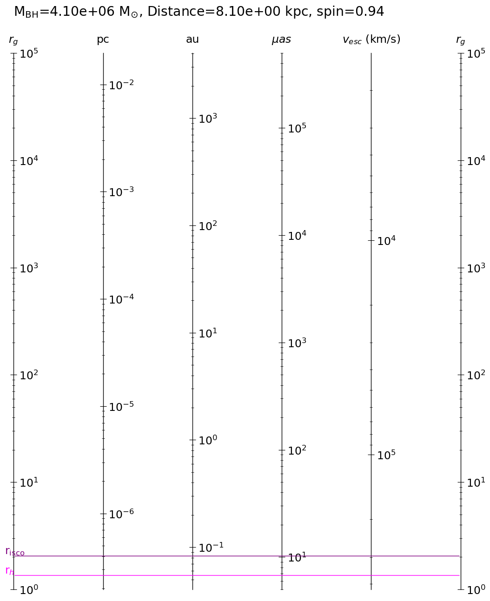

pyds.astro¶
pyds.astro.astrounit¶
For the purpose of quick reading the astronomical constants in cgs unit.
This module may be particularly useful if you compile it in the start-up batch file.
add PYTHONSTARTUP variable to .bashrc
export PYTHONSTARTUP=$PYTHONPATH/startup.pyor .tcshrcsetenv PYTHONSTARTUP $PYTHONPATH/startup.pyin startup.py, add the line below:
from pyds.astro import astrounit as unitThen, whenever you open the python, you can use the units without hassels.
[1]:
from pyds.astro import astrounit as unit
unit.info()
name name in astropy value in cgs unit
----------------------------------------------------------------------
g G 6.674080e-08 cm3 / (g s2)
lsun L_sun 3.828000e+33 erg / s
msun M_sun 1.988475e+33 g
rsun R_sun 6.957000e+10 cm
au au 1.495979e+13 cm
c c 2.997925e+10 cm / s
alpha alpha 7.297353e-03
h h 6.626070e-27 erg s
kb k_B 1.380649e-16 erg / K
pc pc 3.085678e+18 cm
kpc kpc 3.085678e+21 cm
me m_e 9.109384e-28 g
mn m_n 1.674927e-24 g
mp m_p 1.672622e-24 g
mh m_p 1.672622e-24 g
amu u 1.660539e-24 g
sigmaT sigma_T 6.652459e-25 cm2
sigmaSB sigma_sb 5.670367e-05 g / (K4 s3)
esu e.esu 4.803205e-10 cgs
----------------------------------------------------------------------
not in astropy:
year not in astropy 3.153600e+07 s
lyr not in astropy 9.454255e+17 cm
eV not in astropy 1.602177e-12 erg
Jy not in astropy 1.000000e-23 erg / (cm2 s Hz)
re not in astropy 2.817941e-13 cm
[2]:
from pyds.astro import astrounit as unit
print(unit.g, unit.pc, unit.lyr)
6.674079999999999e-08 3.085677581467192e+18 9.454254955488e+17
[3]:
""" In fact, the most values are referred to those of astropy package. This code
is aimed to call the astrophysical costant in cgs unit somewhat easily. """
from astropy import constants as cons
from pyds.astro import astrounit as unit
print(cons.G.cgs.value, unit.g)
6.674079999999999e-08 6.674079999999999e-08
[4]:
import pyds.astro as astro
print(astro.info())
name name in astropy value in cgs unit
----------------------------------------------------------------------
g G 6.674080e-08 cm3 / (g s2)
lsun L_sun 3.828000e+33 erg / s
msun M_sun 1.988475e+33 g
rsun R_sun 6.957000e+10 cm
au au 1.495979e+13 cm
c c 2.997925e+10 cm / s
alpha alpha 7.297353e-03
h h 6.626070e-27 erg s
kb k_B 1.380649e-16 erg / K
pc pc 3.085678e+18 cm
kpc kpc 3.085678e+21 cm
me m_e 9.109384e-28 g
mn m_n 1.674927e-24 g
mp m_p 1.672622e-24 g
mh m_p 1.672622e-24 g
amu u 1.660539e-24 g
sigmaT sigma_T 6.652459e-25 cm2
sigmaSB sigma_sb 5.670367e-05 g / (K4 s3)
esu e.esu 4.803205e-10 cgs
----------------------------------------------------------------------
not in astropy:
year not in astropy 3.153600e+07 s
lyr not in astropy 9.454255e+17 cm
eV not in astropy 1.602177e-12 erg
Jy not in astropy 1.000000e-23 erg / (cm2 s Hz)
re not in astropy 2.817941e-13 cm
None
pyds.astro.astroeq¶
Formulae in astronomy
Most of equations fit to be in cgs unit.
Some equations may need to be double-checked before their usages.
[5]:
from pyds.astro import astroeq as eq
from pyds.astro import astrounit as unit
print(eq.Ledd(1e9*unit.msun))
print(eq.rsh(1.e9*unit.msun))
print(eq.cs(rho=1e-20, P=1e1) / 1e5)
print(eq.tff(rho=1e10))
1.2570651636194645e+47
295325007610024.9
408248.290463863
0.021007040392246275
[6]:
help(eq)
Help on module pyds.astro.astroeq in pyds.astro:
NAME
pyds.astro.astroeq
DESCRIPTION
filename:
astroeq.py
PURPOSE:
collection of formulae in astronomy
Written by:
Doosoo Yoon
Shanghai Astronomical Observatory
History:
Written, 22 November 2017
FUNCTIONS
Ledd(mbh)
Eddington Luminosity
mbh should be in cgs unit.
returned value would be in erg/s unit.
Ljeans(T=0.0, rho=1.0, mmw=1.3)
Jean's length (assume the uniform density at the spherical shape) in cm unit
Ljeans = 2 x Rjeans, where Rjeans = (Mjeans/ (4/3 pi rho))^(1/3)
(using eq.(5.27) for Rjeans in astropedia)
keywords:
T: temperature in K
rho: density in g/cm3
mmw: mean molecular weight (default=1.3 for neutral solar abundance)
Lorentz(v)
Lorentz factor
Mdotbondi(mbh=1.0, rho=1.0, cs=1.0)
Bondi Accretion rate
mbh, rho, cs(sound speed) should be in cgs unit
returned value would be in cm unit.
keywords:
mbh: black hole mass in g unit
rho: density in g/cm3 unit
cs: sound speed in cm/s unit
Mdotedd(mbh, radeff=0.1)
Eddington BH mass accretion rate
mbh should be in cgs unit.
returned value would be in g/s unit
args:
mbh: black hole mass in g unit
keywords:
radeff: radiative efficiency (default=0.1)
Mjeans(T=0.0, rho=1.0, mmw=1.3)
Jean's mass (assume the uniform density at the spherical shape) in g unit
(eq.(5.26) in astropedia)
keywords:
T: temperature in K
rho: density in g/cm3
mmw: mean molecular weight (default=1.3 for neutral solar abundance)
cs(gamma=1.6666666666666667, **keywords)
sound speed
Either of T (temperature) or P (pressure) & rho (density) should be entered
keywords:
gamma: adiabatic index (default: 5./3.)
**keywords:
T: temperature in K
P: pressure in cgs
rho: density in cgs
mmw: mean molecular weight (default: 0.62 for fully ionized)
rbondi(mbh=1.0, cs=1.0)
Bondi radius
mbh and cs(sound speed) should be in cgs unit
returned value would be in cm unit.
keywords:
mbh: black hole mass in g unit
cs: sound speed in cm/s unit
rsh(mbh)
Schwarschild radius
mbh shoud be in cgs unit.
returned value would be in cm unit.
tff(rho=1.0)
free-fall time scale (assume the uniform density at the spherical shape) in s unit
(eq.(5.28) in astropedia)
keywords:
rho: density in g/cm3
vkep(pointmass, r=1.0)
Keplerian velocity in the gravitional potential due to point mass.
returned value would be in cm/s
args:
pointmass: mass of the central point in g
keywords:
r: radius
FILE
/Users/astrodoo/lib/py_lib/pyds/astro/astroeq.py
pyds.astro.bhscale¶
calculate the radius of event horizon and the innermost stable circular orbit with the given parameters of black hole (mass, spin)
visualize the scales
[7]:
from pyds.astro import bhscale
# mbh: black hole mass in solar mass
# distance: distance to the target in kpc unit
# spin: spin of black hole
Sgr = bhscale(mbh=4.1e6, distance=8.1, spin=0.9375)
[8]:
print('rg = %e cm'%Sgr.rg)
print('rh = %f rg'%Sgr.rh)
print('risco = %f rg'%Sgr.risco)
rg = 6.054163e+11 cm
rh = 1.347985 rg
risco = 2.044201 rg
[9]:
%matplotlib inline
figdir = './example_data/'
Sgr.draw(rgmax=1e5,log=True, out=figdir+"bhscale.eps")
BH Params: Mbh=4.100000e+06 M_sun, spin=0.937500, Distance=8.100000e+00 kpc
rg: 6.054163e+11 cm
rh: 1.347985 rg
risco: 2.044201 rg

saved to ./example_data/bhscale.eps